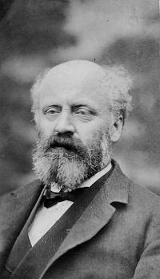

LA MACHINE DE WIMSHURST

Voici la
Machine de Wimshurst
(du nom d’un scientifique anglais du XIXe siècle).
Il s’agit d’un
générateur électrostatique
. Cela signifie qu’elle est capable de séparer des charges électriques fixes,
l’une dans chacun des bras de la machine.
Suivant
Précédent


 Précédent
Précédent